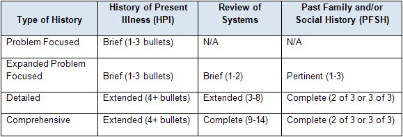
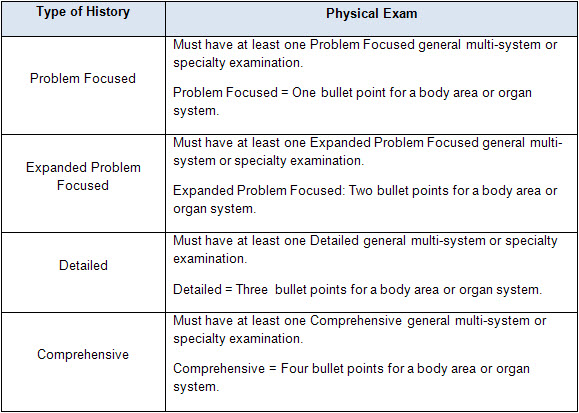
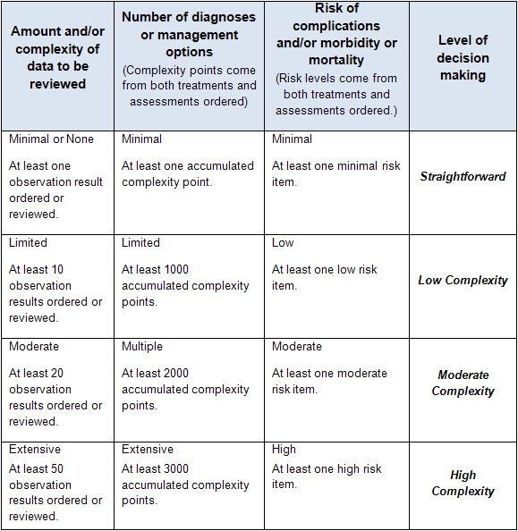
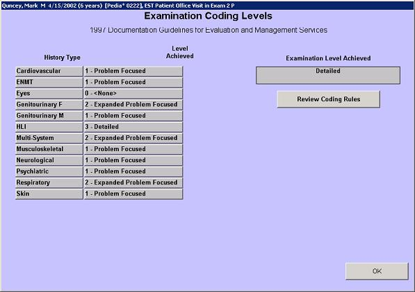

|
History Coding
E & M coding for patient history coding considers the documentation of:
- Chief Complaint
- History of Present Illness (HPI)
- Review of Systems (ROS)
- Past Medical, Family and Social History (PFSH)
 NOTE: A chief complaint and HPI are BOTH required in order to receive any history credit for the encounter. NOTE: A chief complaint and HPI are BOTH required in order to receive any history credit for the encounter.
The chart below explains the history category coding requirements based on the number of bulleted qualifying entries.
History of Coding Guidelines

Counting Bullets for the HPI
In the case of HPI, the elements to be counted (1-3 for a brief HPI, 4+ for an extended HPI) are details about one or more presenting problems. These may include:
- For symptoms: location, quality, severity, duration, timing, context, modifying factors including medications, associated signs and symptoms, etc.
- For follow up of a previously diagnosed problem: changes in condition since the last visit, compliance with the treatment plan etc.
- For patients on multiple medications or whose primary reason for the visit is for medication management: review of compliance, effectiveness of medications, side-effects and complications from medications, verification of medication name, dosage and frequency.
Counting Bullets for the ROS
For purposes of documenting a Review of Symptoms (ROS), the 1995 and 1997 documentation guidelines recognize constitutional symptoms (e.g., fever, weight loss) as a system, in addition to the thirteen named organ systems.
Examination Coding
encounterPRO counts the bullets of physical examinations in accordance with the 1997 documentation guidelines. Seven body areas and twelve organ systems are identified for examination purposes. Drill-down screens provide information for input in these areas and allow for bullets to be counted based on selections at the lowest level in the drill-down.
In addition, encounterPRO will count vital signs for purposes of achieving a constitutional system bullet. encounterPRO will count any of the vitals recorded, including those taken on the vitals screen, and will assume that if one measurement was taken, then at least three were taken and this bullet is satisfied.

Medical Decision Making Coding
The medical decision making coding is itself a product of three components, each of which must be assigned (at least implicitly) a level from one to four. The components are:
- The number of possible diagnoses and management options
- The amount and/or complexity of data to be reviewed
- The risk of complications and/or morbidity or mortality
The chart below shows the progression of the elements required for each level of medical decision making. To qualify for a given level of decision making, two of the three elements in the row must be either met or exceeded.

Verifying the Encounter's E&M Coding Level
At the end of each encounter, the encounter owner can verify that the level chosen by the system is correct based on E&M Coding laws and regulations. The verifying screen can be accessed from two places: on the patient's chart there is a small button labeled E & M Coding Level with a number 1 through 5 on it; additionally on the Billing Review (Exit) screen there is a small button labeled Current Visit level with a number 1 through 5 on it.
Selecting either of these buttons takes the user to the Encounter Coding Levels screen. This screen indicates the level that was calculated and allows the user to get more details and make any necessary changes. This screen is shown below.

The asterisks illustrate the level of coding determined by encounterPRO for each category: History, Examination, and Decision Making. encounterPRO also lists the amount of time each person in the practice spent with the patient's chart. This is important documentation in case it is necessary to "up code" because of counseling time, a factor that encounterPRO does not include in the level algorithm.
The calculated visit level is highlighted in dark gray. The user can override this decision by manually highlighting a number at the User Selected Visit Level and then selecting finish. Choose the Details button below any of the categories to display details on the level achieved.
The Coding Levels screen appears for the category, such as the History Coding Levels screen. E&M Coding rules for this category can be accessed from the Review Coding Rules button.
NOTE: Notice the Time in Chart text box. EncounterPRO will track the amount of time each user spends working on the patient chart. This is for information only, it is not used in calculating the E & M visit level. If the provider reviews the amount of time spent with the patient and believes that this justifies a higher visit level, he or she can select the appropriate level using the buttons on the User Selected Visit Level.
Reviewing the History Coding
In version 5, a user can review how encounterPRO calculated the history coding level. Access the Encounter Coding Levels screen, then select Details below the History column. The History Coding Levels screen shows which level was achieved for each history type. Select any of the Level Achieved bars to view the Coding Rules screen. The first tab shows which rule was used for this encounter. The Encounter Data tab shows the exact observation and elements that were counted.
(screen)
Reviewing the Examination Coding
In version 5, a user can review how encounterPRO calculated the examination coding level. Access the Encounter Coding Levels screen, then select Details below the Examination column. The Examination Coding Levels screen shows which level was achieved for each observation type. Select any of the Level Achieved bars to view the Coding Rules screen. The first tab shows which rule was used for this encounter. The Encounter Data tab shows the exact observations and elements that were counted.

Reviewing the Decision Making Coding
In version 5, a user can review how encounterPRO calculated the decision making coding level. Access the Encounter Coding Levels screen, then select Details below the Decision Making column. The Decision Making Coding Levels screen shows which level was achieved for each decision making component. Select any of the Level Achieved bars to view the Coding Rules screen. The first tab shows which rule was used for this encounter. The Encounter Data tab shows the exact observations and elements that were counted.
(screen shots)
What are the Default Settings that Affect E & M Coding?
There are several areas in encounterPRO that have settings which impact E & M coding:
- Assessments can be assigned a risk level (Minimal, Low, High) and complexity points (0 - 3000). Assessments are preconfigured with a risk level of two (Low) and complexity of N/A. The system automatically halves the complexity level for assessments closed during an encounter.
- Procedures can be assigned a risk level (Minimal, Low, High) and complexity points (0 - 3000). Procedures are preconfigured with a risk level of two (Low) and complexity of N/A.
- Observations can have results which are coded as bullet points to count toward specific categories. Observations (histories and physicals) have the bullets assigned to count correctly in order to receive the correct level. The only reason to change these is if new observations and results are added. encounterPRO allows the user to easily change these preconfigured settings.
Want to Learn More?
Related Solutions
Screen: Billing Review
How to: Approve Encounter Billing
How to: Modify the Encounter Billing
Related Education Opportunities
Provider
|